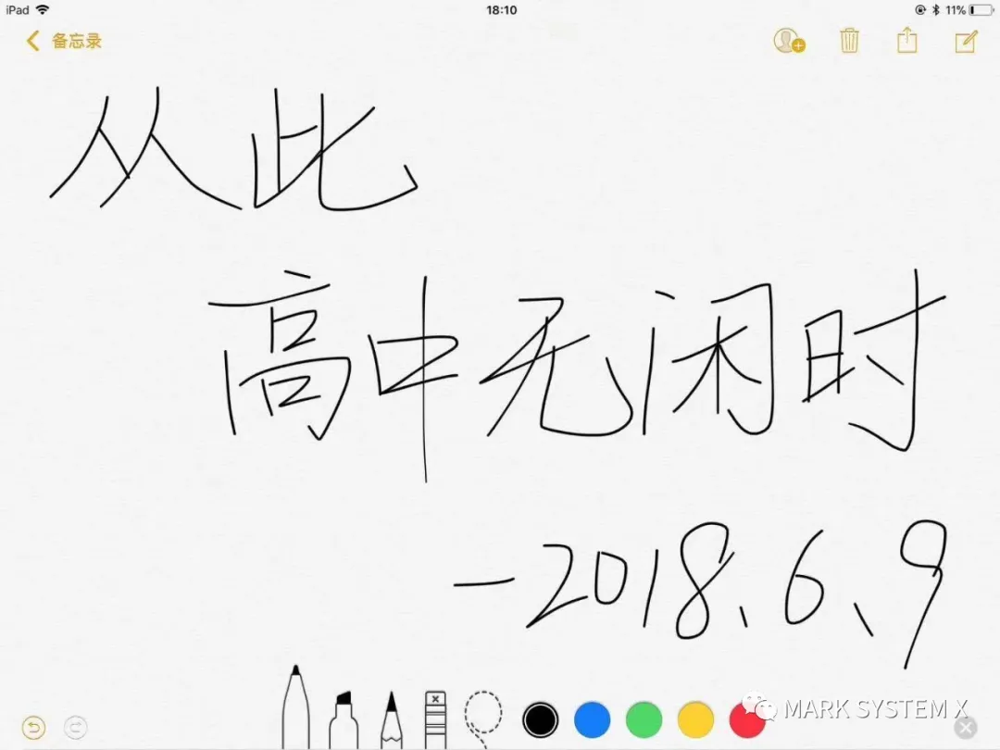
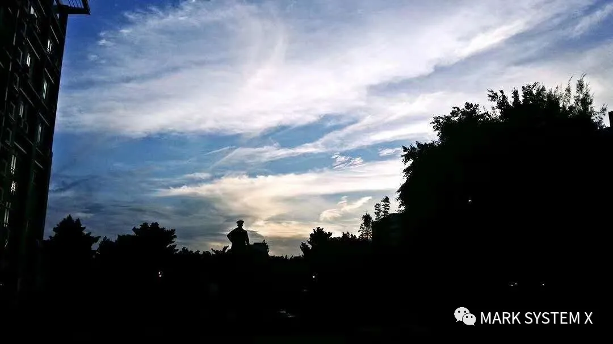
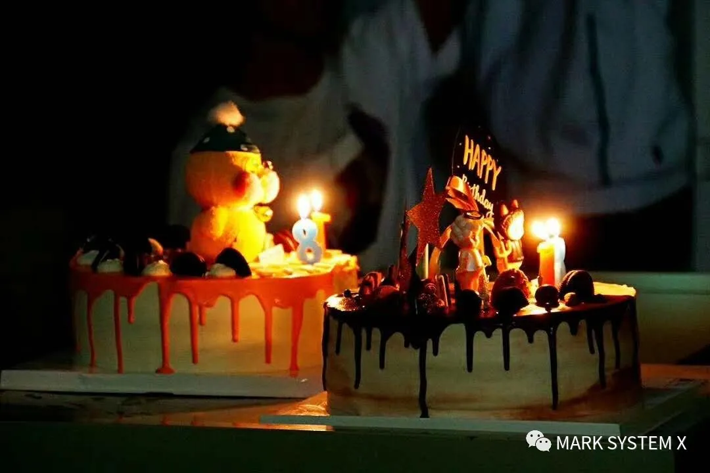
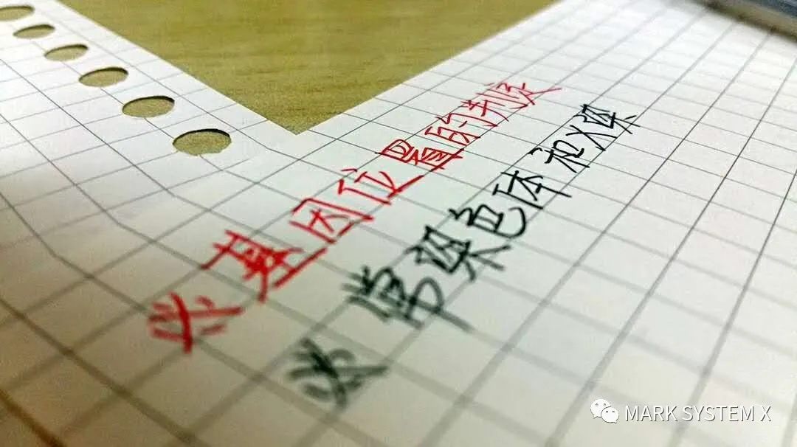
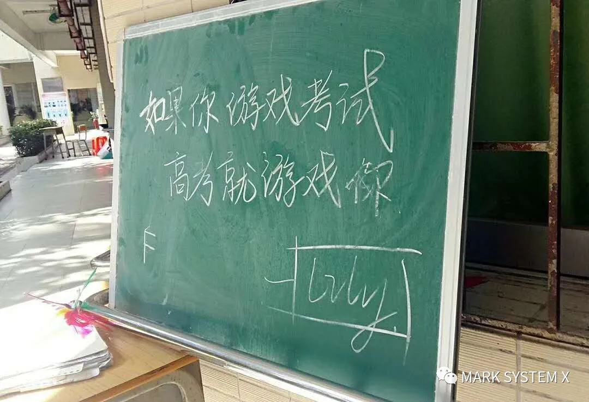
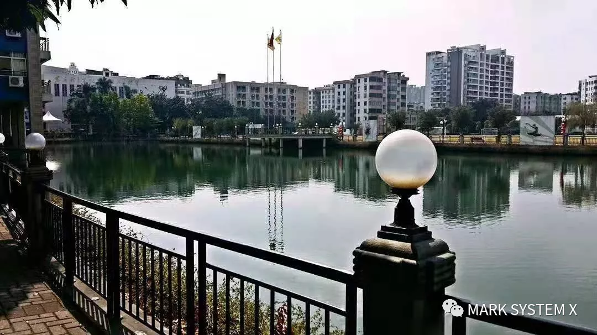
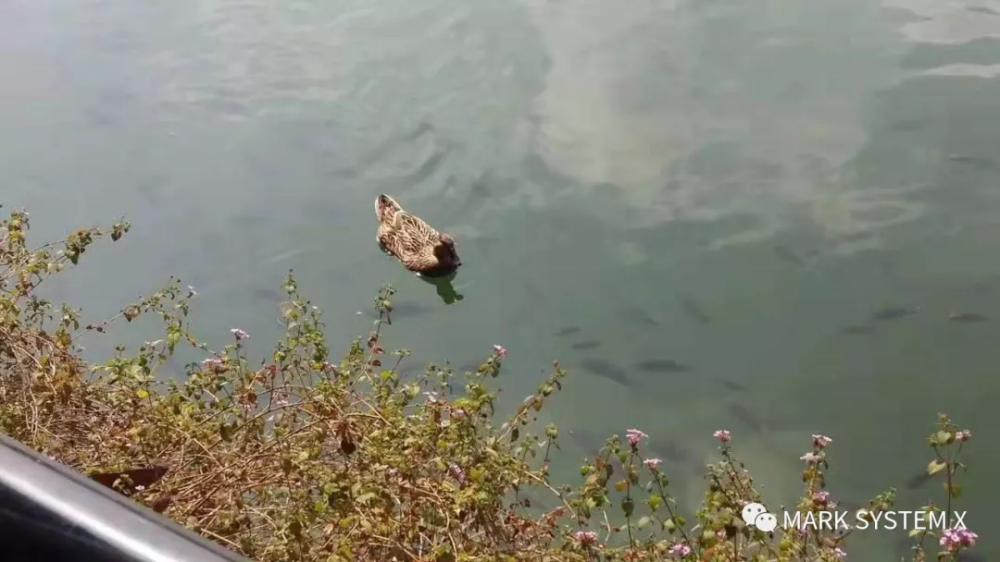
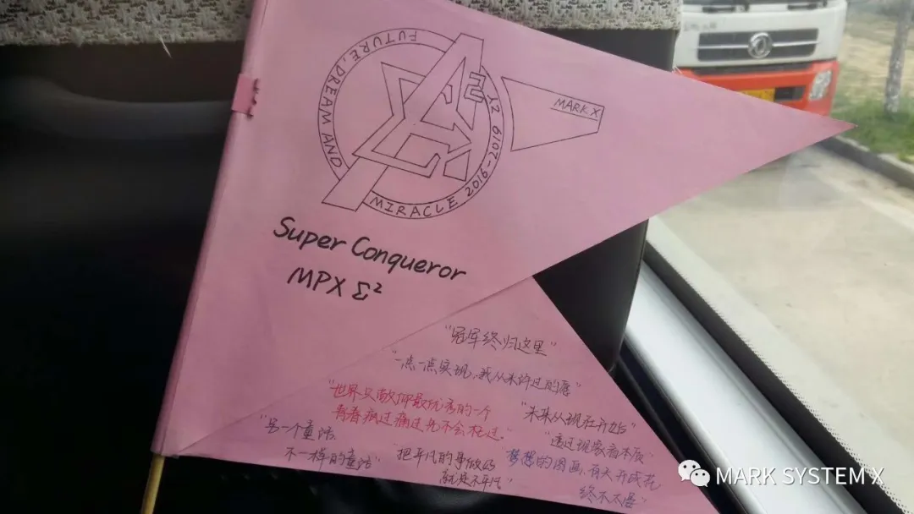
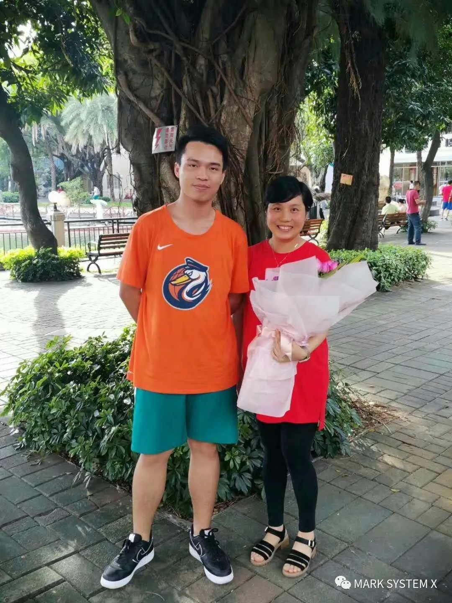
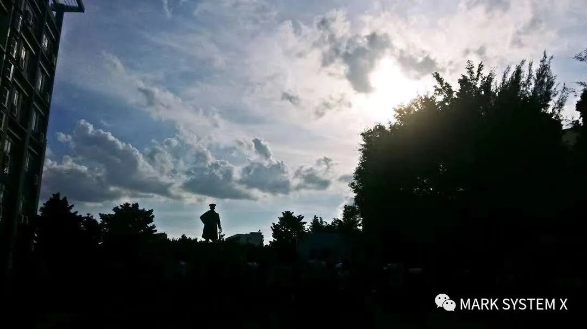

很久之前，看过卢永浩书上的一句话：“梦一整个幻夏”。
偶尔整理书架上的书本，不曾想几个月未曾摆动，竟已落下一层薄薄的灰。拿起一本天蓝色的相册，两张照片悄然飘落。
照片里伫立着同一个手扶宝剑的军人雕像。只不过，它们身后的景象略有不同：
那张老旧褶皱的照片中，渐没的黄昏还在点缀着深蓝的天空，像金色的鱼群在深邃的海洋里逐渐远去。
而那张还带有显影气息的照片里，耀眼的光芒的透过散漫的云团，自由自在地洒向大地，如欢快的孩子在无际的草原上奔腾，无拘无束，充满希望。
那是一个时代的开始，那是一个时代的落幕。
走上天台，凝望着河对岸那座古老校园上的天空。不知不觉中，视线慢慢地模糊。
思绪在时光的长河里溯流而上，
回到了那一个幻夏。
幻夏伊始 | Beginning
时间虫洞的出口，是去年高考开始的时候。因为腾出课室场地作为考场，全级都得到了三天的假期。
然而，身边少了很多出去吃喝玩乐的身影，朋友圈也失去了往常假期时轻松与愉快的气氛。
高考开始的时候，我守在电脑和电视前面，关注着高考进行的全过程。
每当考场考试开始的铃声从直播现场传来时，我的心总是不由自主的收紧一下。
一种从下而上的紧迫感迅速传递到脑海里。
仿佛，我就是在现场开始动笔的高考考生一般。
虽然离真正的高考还有一年，但心里有种感觉已经越发明显：
自己已经走上了一条无可逆转的轨道，成为了一次真真正正的考验的参与者。
那天，我在iPad的备忘录里写下一行字：
“从此高中无闲时。”
一切，都开始改变了。
高三的毕业晚会，数十条光束以仲元为中心点，向茫茫的夜空散发出去。
我第一次拿起相机参加这般盛大的活动。
在镜头里，
我看到了师兄师姐们各奔东西之前的相拥而泣，看到了老师们临别时真挚而感人的句句箴言，看到了我们这一届六角楼新主人对未来的无限憧憬。
晚会上唱了一首的歌——《搬到六角楼》：
“不知道/那里的校道/有什么花苞”
“何处居知了鸣叫”
“十六岁我陌生/不知道/初来到”
“那分明的绿荫鸭子里的夕照”
“于是乎/结下的当初/一日一朵熟”
“走廊上是否还有我/还有我/还有我曾踏的脚步”
......
每一句歌词里，都包含着一个关于仲元的故事，一段专属于仲元的回忆。
突然间，我感觉自己就像是即将离开仲元的毕业生一样，
不舍与难过在心底里充盈、回转、迸发。
明月当空，霓虹闪烁，
仲元的土地在这一场华丽而又庄重的仪式里，完成了又一年新老交替。
末了，我背起相机，走过灯火通明的六角楼。
里面人头涌动，无数的欢歌笑语回响在楼道里。那可能是他们最后一次一起回到这些教室了。
或许，明年的这个时候，也会是这样子吧。
亚热带春季带来的温暖很快便会消失殆尽，从赤道赶过来的直射阳光将逐渐接管这一片北回归线上天空。
我从牛奶店的冰箱里拿出一罐苏打水，和老板娘悠闲地聊着学校的近况。
惠州一模的揭幕战刚刚过去，整个年级还沉浸在对新考试的回味之中。
快步走过缓缓关上校门口，却发现头顶的天空已经隐隐闪现点点的星光，
远方的夕阳似乎还眷恋着这片土地，竭力地在远方的天际晕染上最后一抹黄昏。
我走到雕塑喷泉前的那片空地，拿起手机，
拍下了眼前的这番景象。
那是高二时代的最后一个晚上，
那是一个永不忘却的夏天的开始。
夏日旅途 | Travelling
九月下旬的时候，全班一起给我们最亲爱的Happy姐策划了一次生日庆祝。
大家趁着晚修和大课间，准备好了蛋糕和教室的布置，
在黑板上写下了“Happy Birthday”，
在课室里挂上了彩带和气球，
请来了Lily姐和阮大师。
大家一起藏在课室里，等待着这一个惊喜。
虚掩的门被推开了。
happy的眼罩摘下来的那一瞬间，
大家捧上了点起了蜡烛的蛋糕。
透过微弱的烛光，我们似乎第一次看见了happy湿润的眼眶......
其实，这一天并不是happy真正的生日。
但大家都希望能在这最后一年的机会，
给予这位陪伴了我们三年的，人生历程里极为重要的老师，
一次最真挚的感谢。
渐渐地，五个月就这样不知不觉地过去了。
一月的寒风暂时掩盖了夏日的炎热，天上的太阳也收起了耀眼的锋芒。
结束了十二月的广州调研考试后，我们幸运地获得了二十多天的长假。
当然，没有人敢在这个假期里有任何一丝的懈怠。图书馆的座位比金子还要珍贵，
偌大的桌子上堆满了无数的书本。从早晨六点半写到晚上六点半，
倘若觉得累了，便拿起水杯，走到门外的阶梯上，
望着面前的凤凰树，心里默念着还没熟悉的诗词。
实在是困乏到受不了了，便埋头趴在厚厚的笔记课本上，小憩个十五分钟，便又爬起来继续奋战。
中午还是有许多快递小哥等待在仲元门口，但他们带来的除了外卖，还有着一本本崭新的《五三》、《高考必刷题》、《42套》......
听闻重点班一直上课考试直到年廿八，但大家也丝毫没有落下一步，直到除夕晚上，甚至大年初一，还有人在继续学习
毕竟，这可不是游戏。
也在这个时候，我开始感受到这种生活中所独有的快乐。
中午吃完饭，午后的困意还不是特别足的时，我常常坐在明德湖边的绿荫里，身旁放上一杯绿茶，
塞上耳机，歌单里的音乐自动循环，看着明德湖里的鸭子无忧无虑地游动着。
有时气候刚好的时候，我便靠在长椅的边上，就着悠扬的旋律，闭上眼睛，
感受着时间从身边慢慢地、慢慢地流逝：
......
“时间它于哪里悄悄偷走”
“昂贵的心愿逐渐被铁锈”
“何日发觉望透”
“世上从没独角兽”
......
 也就十几天的光阴，却感觉过了一年。
旅途从来没有一路平坦，起起落落才是。
非常高兴能在18岁的这一天，收到大家的礼物与祝福，
还有阿鲁巴
第一次,这种感觉，难以用简短的言语所能描述。
也曾掉进了低迷区许久。连续两次大考都离预想差了许多。
离高考还剩下不到一百天，我看着面前一堆堆写满了的练习册，心里的落差无比巨大。
有那么一瞬间，我感觉自己好像做的一切毫无意义，我快要放弃了。
值得庆幸的是，在这个无比艰难的时候，happy看到了我的异常，特地约我到办公室，和我谈了许久。
渐渐地，我从这片黑暗阴影里找到了方向，
慢慢地、慢慢地回到了原来的轨道。
天气又开始温暖起来了。冲锋的口号在六角楼四处喊起：
“登顶双一流”
我专门找了一节晚修，设计了这面高考的“战旗”插在书包后面，
走到了滴水岩的顶峰。
躺在床上，没有什么困意。
我爬起身来，拉开窗帘。窗外的世界一片寂静，
不远处曾经热闹繁华的夜市好像也失去了它的嘈杂与喧嚣，只留下一轮清澈的明月和几颗隐隐闪烁的形象高挂在天空之上。
低头看着旁边的时钟，闪着白色荧光的秒针还在时间平面上慢慢地运行着，
终于，回到了它的的原点：
“2019年6月7日，23时50分。”
点亮床头的小夜灯，打开做了一年的高三时间记录盒，里面满满当当地塞满了许多这一年里重要的纪念品。
我拿起其中厚厚一叠的备忘日程，恰好一共有九十九张，加上还在速写板里的一张，
刚好一百张。
我快速的翻阅着，往事随着翻动的文字从记忆中涌来。就像一年前的毕业晚会上那样，我突然意识到：
“这场旅途，真的要到终点了。”
在我的桌面上，一直写着这么一段话：
“正如我仍感恩这段经历，也感恩这个结果，
因为我相信一切都是最好的安排。
你只需要在自己的跑道上挥汗如雨，
认认真真踏踏实实一步一步向前跑就好。
至于结果，只要你足够认真虔诚，一定不会错的。”
盛夏落幕 | Ending
走上仲元桥的桥头，放眼望去是一片红色的汪洋：
追梦、牛奶店的门前挂满了一条条的红底黄字的助威横幅；老板娘穿着一袭红裙，在柜台前不断地忙碌着，一边把面前的矿泉水递给即将进入考场的同学，一边还不忘面带笑容地说一声“高考加油”；
严肃的父亲们穿上了喜庆的红装，而妈妈们更有的穿上了华丽的旗袍，他们簇拥着孩子一路走到大门前，不断重复叮嘱着考试里各种应试技巧；
平日里不善欢笑的数学老师康师傅以滑稽的笑容站立在门口，用他那浓重的口音来了一句“还阔以的吧这个”，引得大家哈哈大笑，合不拢嘴。
绿荫广场的凤凰树下，稀稀落落地铺着五月最后一批盛开的凤凰花。
老师们排成两列红色的长队，从六角楼前一直通向考场楼下。
我们走进其中，和每一位老师击掌，拥抱，
他们有的陪伴了我们整个高中时代，有的为我们解答过许多问题，有的可能只有见面之缘。
但无论认识与否，我们收到了一份份来自他们心中最真挚的祝福。
尔后，我们走上阶梯，各自奔向考场，走向了这段夏日旅程的最后一站。
夏天伴随着这隆重而神圣的景象，奏起了它最高昂和欢腾的乐章。
看到监考老师是我们熟悉的地理老师“兵爷”，我原先感觉紧张的心慢慢地放松下来。
高考，也还是见过了无数次的、白底黑字的试卷。当看到那个熟悉的作文题目，
看到那个后来称为“天坑”的维纳斯雕像，看到那一份还是不太能完全做好的理综题，
脑海里这一年来为此曾充满的紧张与激动却在慢慢地褪去，似曾相识的熟悉感。
和对这一年点点滴滴的回忆在心头渐渐涌起。
只感觉手中的笔在自动地运转，眼前的答题卡逐渐填满了一个个熟悉的文字，
手表上的秒针滴答滴答，拨动着身边慢慢流逝的时间。
一切就像曾经所曾想象过无数遍的情节，
如慢动作般在眼前上演。
终于，收卷的铃声响彻了这片考场的每一个角落。
“呼——”
合上笔盖，看着监考老师在我身边走过，拿起面前摆放整齐的试卷。
我朝着天花板长舒了一口气，心中一片释然。
走出门口，整个考场爆发出了响彻天际的掌声与欢呼声。我随着涌动的人流，回到那熟悉的绿茵广场，
随处可见欢呼雀跃的同学和老师。
“我们终于考完了！我们毕业了！”
这里如同沸腾的海洋，压抑了大家许久的枷锁被砸个粉碎，
对未来的憧憬，
对远方的期待，
在此刻碰撞、激荡，升华。
我找到了树荫底下的happy姐，拍了一张合照。
收拾好东西，门外喧闹的人们也渐渐散去，
是时候该走了。
再走到仲元像前的那片广场，忽然想起了一年前的夏天，曾在这个位置拍下的那张照片。
回头望去，
午后的阳光已经逐渐褪去它的热度，但依然耀眼的光芒仍然穿透了天空的云层，把它黄昏前最后的余热洒向这一方土地。
我放下手中的行李，拿起手机，
拍下了这一张照片。
我回过头，走向桥那边等待的汽车，
许多熟悉的事物逐渐地向身后远去。
心里五味杂陈，
三年来积聚的无数情感与记忆在此刻交汇，迸发。
我拉了拉了肩上的背带，
最后一次，作为一名仲元的高三学生，
大步流星地，
走过了仲元桥头的斑马线。
或许，这就是一直所说的，
战士在收刀入鞘时的，会有的那一份骄傲吧。
或许，这一个漫长的夏天，
结束了。
像梦一样。
End